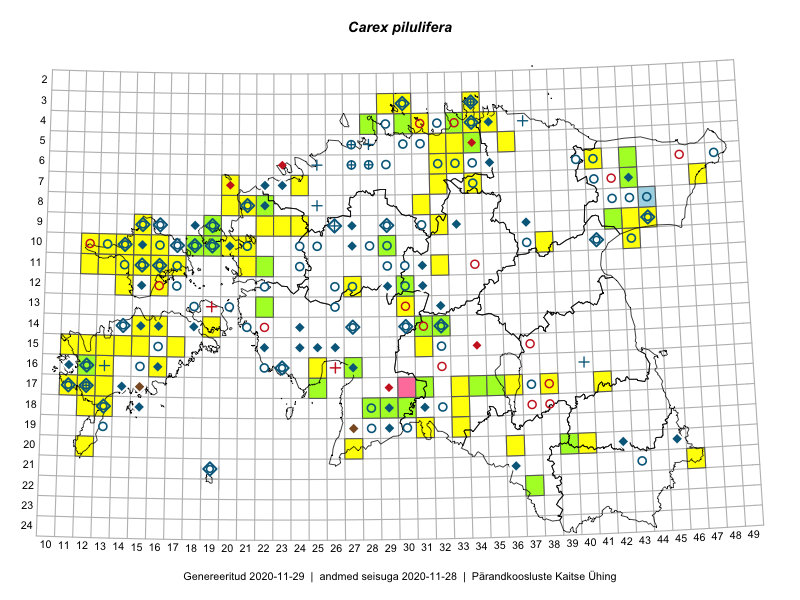

Carex pilulifera
Uuendatud: 2016-12-01
Kaardile koondatud taksonid: Carex pilulifera L.

Kaart põhineb 89 kirjel, neist vaatlusi 86 ja eksemplare 3.
Kuvatud viited 20 esimesele andmebaasikirjele, ülejäänud PlutoFis
- Toomas Kukk, Eerik Leibak: 2015-08-09: 14-15: ala
- Toomas Kukk, Tiit Hallikma: 2015-06-10: 15-31: ala
- Toomas Kukk, Mari Reitalu: 2014-06-20: 16-12: ala
- Rein Kalamees, Kersti Püssa: 2015-09-01: 04-30: ala
- Rein Kalamees, Kersti Püssa: 2015-09-13: 06-32: ala
- Thea Kull: 2015-06-15: 10-16: ala
- Ott Luuk, Elle Roosaluste, Jaak-Albert Metsoja: 2015-06-15: 16-16: ala
- Thea Kull, Peedu Saar: 2015-06-19: 17-41: ala
- Toomas Kukk: 2014-07-12: 09-44: ala
- Thea Kull, Peedu Saar: 2015-06-17: 17-38: ala
- Toomas Kukk, Peedu Saar: 2014-09-12: 06-41: ala
- Thea Kull, Eerik Leibak: 2015-07-21: 07-47: ala
- Meeli Mesipuu, Timo Luhamäe: 2015-07-22: 07-43: ala
- Eeva-Maria Jeletsky, Tarmo Niitla: 2015-06-20: 11-17: ala
- Ott Luuk, Toivo Sepp: 2015-05-14: 09-32: ala
- Mari Reitalu: 2015-08-29: 16-13: ala
- Erkki Otsman, Sergei Smirnov: 2015-06-22: 07-24: ala
- Mari Reitalu: 2015-07-01: 17-12: ala
- Mari Reitalu: 2015-08-11: 17-12: ala
- Mari Reitalu: 2015-08-23: 16-12: ala